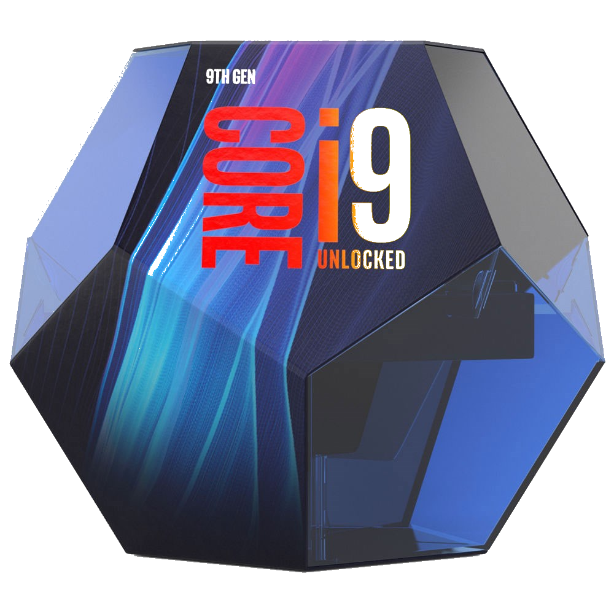
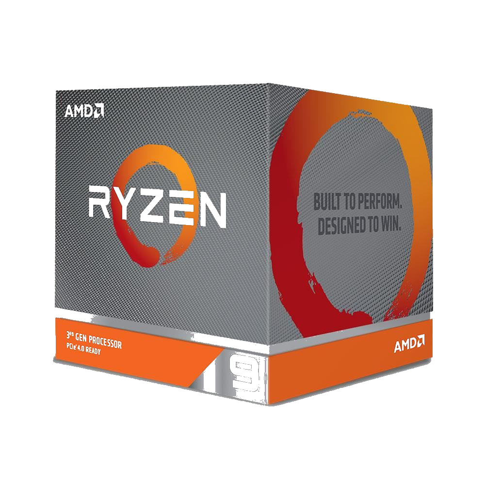

What Is CPU?
tands for "Central Processing Unit." The CPU is the primary component of a computer that processes instructions. It runs the operating system and applications, constantly receiving input from the user or active software programs. It processes the data and produces output, which may stored by an application or displayed on the screen.
The CPU contains at least one processor, which is the actual chip inside the CPU that performs calculations. For many years, most CPUs only had one processor, but now it is common for a single CPU to have at least two processors or "processing cores." A CPU with two processing cores is called a dual-core CPU and models with four cores are called quad-core CPUs
*Click Those AMD and Nvidia Icons to find out more information about that brand.

What Is Intel?
The company specialises in the design of graphics processing units that are used in computers.
Nvidia is known as a market leader in the design of graphics processing units, or GPUs, for the gaming market, as well as system on chips, or SOCs, for the mobile computing and automotive markets.
Narrowing its focus in 2014 to target the gaming, professional visualization, data centre and automotive markets, Nvidia was first founded in 1993.
A big coup early on for the company came after the success of the GeForce GPUs, which led to Nvidia winning a contract to develop graphics hardware for the Xbox console.
*The Photo Seeing on the above is the Intel's one of the powerful CPU version = I9 9900K

What Is AMD?
AMD is the second largest maker of personal computer microprocessors after Intel. They also make flash memory, integrated circuits for networking devices, and programmable logic devices. AMD reports that it has sold over 100 million x86 (Windows-compatible) microprocessors. Its Athlon (formerly called the "K7") microprocessor, delivered in mid-1999, was the the first to support a 200 MHz bus. In March, 2000, AMD announced the first 1 gigahertz PC microprocessor in a new version of the Athlon.
*The Photo Seeing on the above is the AMD's one of the powerful CPU version = RYZEN9 3990X